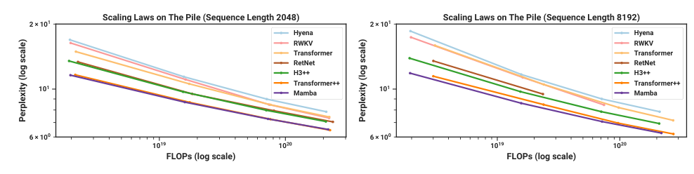

Mamba matches the Transformer with a state that never grows
Letting a linear-time recurrence change its parameters with each token is what finally closed the gap to attention on language, and the same fixed-size state that keeps it cheap is where it still falls short of what a growing cache can recall.
Mamba: Linear-Time Sequence Modeling with Selective State Spaces
Read the paperFoundation models, now powering most of the exciting applications in deep learning, are almost universally based on the Transformer architecture and its core attention module. Many subquadratic-time architectures such as linear attention, gated convolution and recurrent models, and structured state space models (SSMs) have been developed to address Transformers' computational inefficiency on long sequences, but they have not performed as well as attention on important modalities such as language. We identify that a key weakness of such models is their inability to perform content-based reasoning, and make several improvements. First, simply letting the SSM parameters be functions of the input addresses their weakness with discrete modalities, allowing the model to selectively propagate or forget information along the sequence length dimension depending on the current token. Second, even though this change prevents the use of efficient convolutions, we design a hardware-aware parallel algorithm in recurrent mode. We integrate these selective SSMs into a simplified end-to-end neural network architecture without attention or even MLP blocks (Mamba). Mamba enjoys fast inference (5x higher throughput than Transformers) and linear scaling in sequence length, and its performance improves on real data up to million-length sequences. As a general sequence model backbone, Mamba achieves state-of-the-art performance across several modalities such as language, audio, and genomics. On language modeling, our Mamba-3B model outperforms Transformers of the same size and matches Transformers twice its size, both in pretraining and downstream evaluation.1
Where the efficient models kept losing
A state-space model is a linear recurrence borrowed from control theory. It carries a hidden state h through the sequence, updates it one step at a time from the input, and reads an output off it. Written that way it costs one fixed-size update per token, linear in the sequence length and constant in memory, which is exactly the budget attention spends past. The trouble is that the cheap version had never written as good a language model.
It is worth being precise about what it was losing on. Across a suite of efficient attention-free architectures, gated convolutions and their relatives, the perplexity gap to attention on the Pile runs as high as 2.1. Roughly 82 percent of that gap is one skill: associative recall, retrieving something the text mentioned earlier. Attention is extravagant at recall for the parameters it spends, so much so that a 70-million-parameter attention model beats a 1.4-billion-parameter gated-convolution model at it.2 Those tested models predate Mamba, so the number frames the problem rather than grading Mamba on it. It names the thing the efficient models could not do: read their own context.
Mamba's diagnosis is that the older state-space models are stuck because their update is the same at every step. A recurrence with fixed weights cannot look at the token in front of it and decide what to keep and what to discard. The paper's fix, stated in one line, is to let the parameters of the recurrence be functions of the input.1
Give a linear-time recurrence the ability to change its own update from one token to the next, and it can finally choose what to remember. That single change is what lets a model with no attention keep pace with one that has it.1
The recurrence a state-space model runs
Start with the continuous form the structured state-space line inherits. A one-dimensional input signal x(t) drives a hidden state h(t) of size N through a linear differential equation, and the output y(t) is a linear readout of the state.
\mathbf{A} is N \times N and governs how the state evolves on its own; \mathbf{B} writes the input into the state; \mathbf{C} reads the state out.1 A network does not run in continuous time, so the model is discretized. A step size \Delta turns the continuous pair (\mathbf{A}, \mathbf{B}) into a discrete pair (\bar{\mathbf{A}}, \bar{\mathbf{B}}) by the zero-order-hold rule, which assumes the input is held constant across each step.
With the discrete pair in hand the model is a plain recurrence: a multiply-add per token, carrying the state forward.
This is what runs at inference: constant work and constant memory per token, no growing cache behind it. The rest of Mamba is a fight to keep that recurrence while still training it at Transformer speed.
Why a fixed recurrence becomes a convolution
A recurrence is sequential. To get h_t you first need h_{t-1}, so a long sequence is a long walk, and a walk wastes a GPU built to do thousands of multiplies at once. S4 and the structured state-space models before Mamba escaped that cost with one observation. If \bar{\mathbf{A}}, \bar{\mathbf{B}}, and \mathbf{C} never change across the sequence, the recurrence is linear and time-invariant, and unrolling it gives an explicit convolution.
A convolution is embarrassingly parallel and runs as a fast Fourier transform, so S4 trains at the speed of a convolutional network while still behaving like a recurrence at inference.3 One kernel serves every position because the dynamics are the same at every position.
That same property is why S4 cannot read its context. A kernel fixed before the model sees a single token cannot treat one token differently from another based on what the token is. It slides one filter over the input and blurs it; it has no way to look at the current token and decide, on the spot, to record it or let it pass. The convolution buys speed by giving up the one thing recall needs.
Selection makes the recurrence read the token
The loose telling of Mamba's idea, that the model learns to attend to the tokens that matter, is close enough to mislead. Attention is the thing Mamba takes out. The precise version is narrower and mechanical: three of the recurrence's parameters stop being fixed weights and become functions of the current input.
- \mathbf{B}How the input writes into the state, now a linear projection of the current token instead of a fixed weight.
- \mathbf{C}How the state is read out, also a projection of the current token.
- \DeltaThe step size, now input-dependent: a large value resets the state toward the current token, a small value carries the old state through.
- xThe current token, the single thing all three parameters now depend on.
The paper draws the interpretation in the model's own terms. \Delta behaves like a gate. Push it large and \bar{\mathbf{A}} = \exp(\Delta \mathbf{A}) drives the state toward forgetting what it held and writing in the current token. Push it small and the token is ignored, and the state coasts. In the one-dimensional case the selective update reduces exactly to the gate of a gated recurrent network, the same g_t = \sigma(\mathrm{Linear}(x_t)) that interpolates between the old state and the new input.1
Whether the input-dependence is what matters, rather than the block it sits in, is a question the paper settles with an ablation on a synthetic task. Selective copying asks the model to reproduce a handful of marked tokens pulled out of a stream of noise. The markers sit at random distances, so a fixed spacing cannot solve it and the model has to select on content.
| Architecture | Inner layer | Accuracy |
|---|---|---|
| No gate | S4 | 18.3% |
| No gate | S6 | 97.0% |
| H3 | S4 | 57.0% |
| H3 | Hyena | 30.1% |
| H3 | S6 | 99.7% |
| Mamba | S4 | 56.4% |
| Mamba | Hyena | 28.4% |
| Mamba | S6 | 99.8% |
Read down the S6 rows and the number barely moves wherever it sits: 97 to 99.8 percent. Read the S4 rows and no architecture rescues it. The plain S4 layer scores 18.3 percent, and wrapping it in the H3 or Mamba block lifts it only to the mid-fifties.1 The selective layer is doing the work on this task, and the block around it is close to beside the point.
Selection has a price the rest of the paper is built to pay. \mathbf{B}, \mathbf{C}, and \Delta now take a different value at every position, and their shape grows from (D, N) to (B, L, D, N), one setting per token. The convolution assumed a single kernel for the whole sequence, and selection has just made the kernel change from token to token. The shortcut is gone.
The scan that pays for selection
Without the convolution the model is a sequential recurrence again, and a naive version would be both slow and memory-hungry. The time-varying state at full width is a tensor of shape (B, L, D, N). Moving it in and out of the GPU's high-bandwidth memory at every step is the same traffic that made attention slow in the first place. Mamba buys the speed back with a hardware-aware selective scan, and it rests on two ideas.1
-
Scan, do not loop
The recurrence is computed as a parallel scan rather than a step-by-step loop. A scan is the prefix-sum pattern generalized past addition, and because the state update composes associatively, the outputs at every position can be produced in a logarithmic number of parallel passes instead of a linear walk down the sequence.1
-
Fuse the kernel and recompute
The whole scan runs as one fused kernel that reads the parameters from slow memory once, does the discretization and the scan in fast on-chip SRAM, and writes only the outputs back. It stores none of the intermediate states, recomputing them in the backward pass, the same trade of arithmetic for memory that a fused attention kernel makes.1
![Two panels. Left, a log-log plot of time in milliseconds against sequence length from 512 to 512k, with four lines: FlashAttention-2, Convolution, Scan in PyTorch, and Scan (ours). Below about 2k the lines are close; above it the FlashAttention-2 and convolution lines bend upward while Scan (ours) stays the lowest, with the PyTorch scan far above and out-of-memory crosses on the attention and convolution lines at long lengths. Right, a bar chart of inference throughput in tokens per second against batch size from 1 to 128, with tall blue Mamba-1.4B bars far exceeding orange Transformer-1.3B bars, and green Mamba-6.9B bars exceeding red Transformer-6.7B bars, the Transformer bars hitting out-of-memory at large batch sizes.](mamba/asset-1.png)
The left panel settles whether the scan actually pays. Below a sequence length of about 2,000 a good attention kernel and the fused scan are close, and the naive scan is already an order of magnitude behind. Past 2,000 the curves separate. The scan keeps rising in a straight line while attention's time bends upward. It ends up faster than FlashAttention-2 at long sequences, and 20 to 40 times faster than the naive scan throughout.1 The crossover is the honest part of the figure. Below it a well-written attention kernel is competitive, and the scan earns its keep only where the sequence is long.
The right panel is the inference claim. Because a recurrent model holds a fixed-size state and no key-value cache, it can run at batch sizes a same-size Transformer cannot fit, and it reports 4 to 5 times the generation throughput. The figure between them pushes the point past a size gap: an untrained Mamba-6.9B out-generates a Transformer-1.3B five times smaller.1 The multiple the abstract rounds to five is a batch-size effect, not faster arithmetic.
Matching a Transformer twice its size
The synthetic task shows selection works in principle. The language-modeling curves show it works at the size people actually train at.

The panels plot perplexity against training compute for models from 125M to 1.3B parameters under the Chinchilla protocol. Mamba's curve tracks Transformer++, the modern recipe with rotary embeddings, SwiGLU, and RMSNorm. It sits below every attention-free line: Hyena, RWKV, RetNet, and H3++. It is the first attention-free model to match that recipe rather than merely beat weaker ones.1 The two panels are one experiment at sequence length 2,048 and 8,192, and Mamba's lead over the Transformer grows at the longer length, the regime where attention's quadratic cost bites hardest.
Trained out to 300 billion tokens and evaluated with no task-specific fine-tuning, the pattern holds against a matched open baseline.
| Model | Pile ppl | LAMBADA acc | Avg acc |
|---|---|---|---|
| Mamba-2.8B | 6.22 | 69.2% | 63.3% |
| Pythia-2.8B | 6.73 | 64.7% | 59.1% |
| Mamba-1.4B | 6.80 | 64.9% | 59.7% |
Against Pythia-2.8B, Mamba-2.8B is ahead on every column: 6.22 against 6.73 in Pile perplexity, 69.2 against 64.7 percent on LAMBADA, 63.3 against 59.1 percent averaged over six tasks.1 The sharper reading is one row down. Mamba-1.4B, at half the parameters, already edges Pythia-2.8B on the same average, 59.7 against 59.1. That is the paper's headline claim made concrete: a selective state-space model holding even with a Transformer of twice its size.
One synthetic result deserves a separate look, because the record after publication turns on reading it correctly.

Induction heads is the associative-recall task in its simplest form. Earlier in the stream the model saw a cue token followed by some value, the cue appears again, and the model must produce the value that followed it last time. Trained at length 256, Mamba solves the task out to a sequence length of 220, just over a million. That is roughly four thousand times its training length, and accuracy stays flat the whole way. Every attention variant and the other efficient baselines drop toward chance within about an order of magnitude past 256.1 The selective state has learned a retrieval rule that does not care how long the sequence gets.
What that settles is narrow, and the width of the claim is where the paper and its later critics part. Induction heads is a single lookup: one cue, one value, retrieved once. A state of fixed size can hold that. What a fixed state cannot obviously hold is many items at once, or a long string reproduced word for word, and the figure says nothing about either.
Where a fixed state stops
Mamba's central claim held, and the two years since have drawn its edges. The same authors put the architecture on firmer ground with Mamba-2, which proves that structured SSMs and a form of attention are two views of one object, the state-space duality, through decompositions of structured semiseparable matrices.4 The refined layer runs 2 to 8 times faster than Mamba's while staying competitive on language. The duality is the more consequential half. It says the choice was never SSM against attention as rival species, but a dial between two ends of one design.
The clean limit was proved within months. A model whose state has a fixed size, independent of sequence length, cannot copy an arbitrarily long string out of its context, because a bounded state cannot store an unbounded input. A two-layer Transformer can reproduce strings of exponential length; a bounded-state model provably cannot.5 This is the other face of the induction-heads win. One item fits in the state; a long verbatim passage does not.
At 8 billion parameters and 3.5 trillion tokens, a controlled study found the theory showing up in practice. Pure Mamba and Mamba-2 match or beat Transformers on most standard tasks and fall short exactly where copying and in-context learning are required, on five-shot MMLU, on a phone-book retrieval task, and on long-context reasoning.6 The remedy kept the SSM and spent a little attention. A hybrid of 43 percent Mamba-2, 7 percent attention, and 50 percent MLP layers beat the 8B Transformer on all twelve standard tasks and kept most of the speed. Seven percent attention bought back the recall the pure model lacked.
Production has already taken that bargain. Jamba interleaves one attention layer for every seven Mamba layers, and its ablation is blunt about the reason. The pure-Mamba model often fails to follow an output format, and the hybrid learns in context successfully with only one attention layer in eight.7 The frontier long-context models keep a slice of attention on purpose.
A last limit qualifies the recurrent framing itself. Because Mamba is sold as RNN-like, it is tempting to credit it with an RNN's power to track state across a sequence. It does not have it. Selective state-space models sit in the same complexity class as Transformers, TC0, so they provably cannot solve permutation composition and the state-tracking problems built on it, such as following entities or evaluating code across a long input.8 A true recurrent network can express those; a selective SSM's state, in that sense, is an illusion.
- Linear-time training through the fused scan and constant-memory inference with no key-value cache.
- Language-modeling parity with a strong Transformer recipe at 125M to 1.3B, and a 2.8B model beating a same-size Pythia zero-shot.
- Length extrapolation on single-lookup retrieval far past the training length.
- A firmer footing and a faster successor in Mamba-2's state-space duality.
- A fixed-size state cannot copy long strings or recall many keys at once.
- At 8B scale the recall and in-context-learning gap to attention reopens.
- The working fix is to add back a fraction of attention, not to run pure Mamba.
- It cannot do RNN-style state tracking; its expressivity is TC0, like attention's.
Mamba settled that a recurrent, linear-time model with a fixed-size state can match a strong Transformer on language modeling. It did so by making the recurrence input-dependent and paying for that with a hardware-aware scan in place of the convolution.1 What it did not settle is that a fixed state can stand in for attention everywhere. The constant-size state that gives Mamba its throughput is the same thing that caps its recall from a long context. Bulk copying, multi-key recall, and state tracking are where a growing cache still wins.568 Two years on, the best 8B models keep the selective state and leave about seven percent of their layers as attention.6
Sources
- Gu, Dao, "Mamba: Linear-Time Sequence Modeling with Selective State Spaces" (arXiv:2312.00752, v2 2024)
- Arora, Eyuboglu, Timalsina, Johnson, Poli, Zou, Rudra, Ré, "Zoology: Measuring and Improving Recall in Efficient Language Models" (arXiv:2312.04927, 2023)
- Gu, Goel, Ré, "Efficiently Modeling Long Sequences with Structured State Spaces" (arXiv:2111.00396, ICLR 2022)
- Dao, Gu, "Transformers are SSMs: Generalized Models and Efficient Algorithms Through Structured State Space Duality" (arXiv:2405.21060, ICML 2024)
- Jelassi, Brandfonbrener, Kakade, Malach, "Repeat After Me: Transformers are Better than State Space Models at Copying" (arXiv:2402.01032, ICML 2024)
- Waleffe et al. (NVIDIA), "An Empirical Study of Mamba-based Language Models" (arXiv:2406.07887, 2024)
- Lieber et al. (AI21 Labs), "Jamba: A Hybrid Transformer-Mamba Language Model" (arXiv:2403.19887, 2024)
- Merrill, Petty, Sabharwal, "The Illusion of State in State-Space Models" (arXiv:2404.08819, ICML 2024)